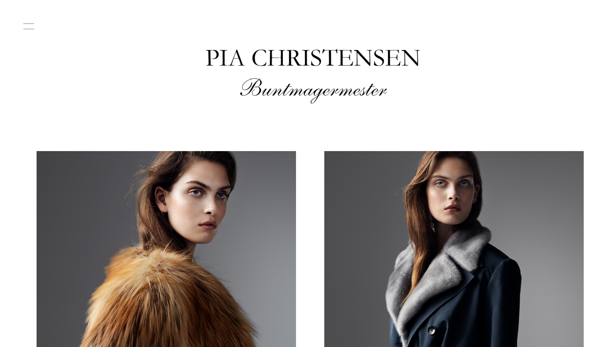
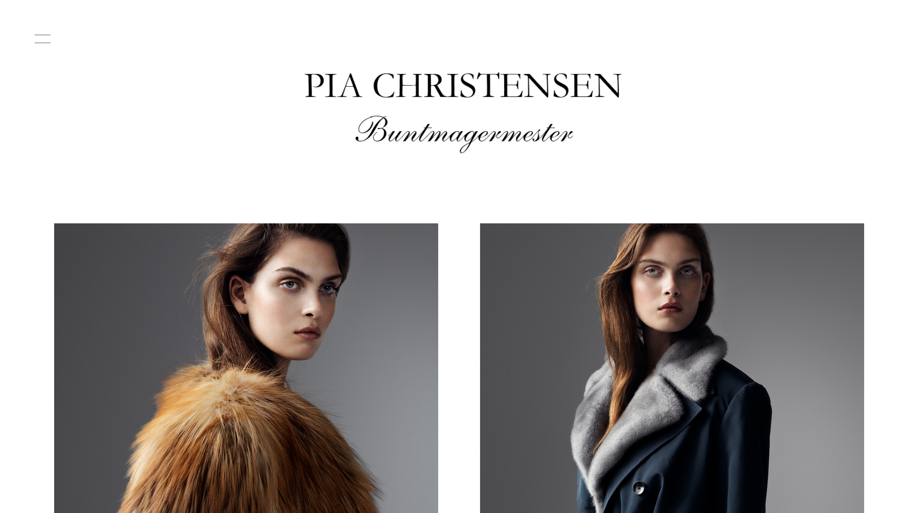

TEMA 2: GRUNDLÆGGENDE CONTENT
I denne opgave 02.02.06 Redesign af website, fik vi mulighed for at afprøve vores nyligt erhvervede viden om web content, digital kommunikation, design af brugergrænseflader og responsivt webdesign gennem at lave et redesign af en selvvalgt virksomheds website. Vi benyttede igen Pemiere Pro, InDesign, Photoshop, HTML og CSS til at udvikle et redesign til vores kunde Pia Christensen, samt en virksomhedsvideo af hendes virksomhed. I dette forløb lærte vi igen at sammensætte tværfaglige arbejdsprocesser i design og udvikling af digital indhold.
Vi valgte, at lave et redesign af Pia Christensen. Pia er bundmagermester, hvor hun i en lang process designer smukke pelse. Vores redesign bærer derfor præg af, at bevare det smukke og tradionelle håndværk i et moderne samfund. Derfor valgte vi et stilrent design, hvor vi prøvede at bevare det gammeldags, traditionelle touch.
Vi har udover et redesign, også lavet en video af dette flotte håndværk, så man virkelig kan få essencen af at være bundmagermester.
 
